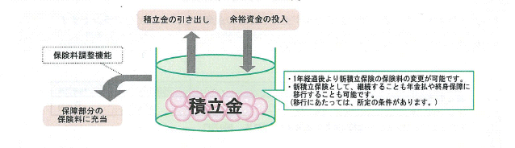

<style>
#tsumitateHoken-tokutyo h1.title{
    margin: 5px 0; 
}
#tsumitateHoken-tokutyo h1.title:before {
    content:'・';
    display: inline-block;
    width: 20px;
}
#tsumitateHoken-tokutyo h1.title:after {
    content:'';
    display: block;
    height: 2px;
background: #000000; /* Old browsers */
/* IE9 SVG, needs conditional override of 'filter' to 'none' */
background: url();
background: -moz-linear-gradient(left,  #000000 0%, #ffffff 75%); /* FF3.6+ */
background: -webkit-gradient(linear, left top, right top, color-stop(0%,#000000), color-stop(75%,#ffffff)); /* Chrome,Safari4+ */
background: -webkit-linear-gradient(left,  #000000 0%,#ffffff 75%); /* Chrome10+,Safari5.1+ */
background: -o-linear-gradient(left,  #000000 0%,#ffffff 75%); /* Opera 11.10+ */
background: -ms-linear-gradient(left,  #000000 0%,#ffffff 75%); /* IE10+ */
background: linear-gradient(to right,  #000000 0%,#ffffff 75%); /* W3C */

filter: none; /* IE6-8 */

}
	#tsumitateHoken-tokutyo .tokutyo li {
		line-height:1.64;
	}
</style>
<section class="tab-pane fade in active" id="tsumitateHoken-tokutyo">
    <h1 class="large title">特徴</h1>
    <ul class="items tokutyo">
        <li>
            ◎計画的な資産形成が可能で(<span class="info">最低基準利益(年1.00%)</span>を保証します。)、急にまとまったお金が必要になったときに備える事ができます。(引き出し時には<a href="javascript:void(0)" class="explain">所定の手数料</a>が控除されます。)
        </li>
        <li>
            ◎積立金を取り崩す事により、毎回の払込保険料の負担を抑えることができます。(保険料調整機能)なお、この設計プランでは定期取崩による保険料調整機能を活用しています。
        </li>
        <li class="attention">
            ※新積立保険は手数料の控除や災害死亡保障がある等、預貯金とは性格が異なります。
        </li>
    </ul>
    <h1 class="large title">しくみ</h1>
    <div class="image">
        <span class="attention">※下図はあくまでイメージです。定期取崩により積立金は減少します。</span>
        <div class="guarantee">
            <span>＜新積立保険の死亡保障＞</span>
            <ul class="items">
                <li>・病気死亡のとき・・・積立金額</li>
                <li>・災害死亡のとき・・・積立金額の1.1倍相当額</li>
            </ul>
        </div>
        </img>
    </div>
    
    <div class="message">
        <ul class="items">
            <li class="small info">※この設計プランでは、ご契約後 10年間、毎回の保険料払込ごとに積立金から、1,000円を取り崩し、保障部分の保険料に充当することにより、払込保険料を 1,000円軽減しています。<br>
                <span class="attention">ただし、積立金を途中で引き出された場合、積立金から取り崩せる期間が短くなる場合があります。</span>
            </li>
        </ul>
    </div>
</section>